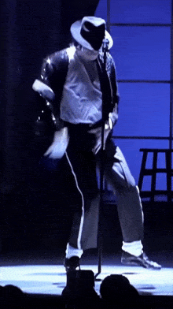

Michael Joseph Jackson nasceu em 29 de agosto de 1958, em Gary, Indiana, nos Estados Unidos. Ele foi um cantor, compositor e dançarino conhecido como o Rei do Pop.
Na década de 1960, Michael começou sua carreira musical como integrante do grupo The Jackson 5. O grupo fez muito sucesso com músicas que marcaram a história da MP.
Nos anos 1970, Michael iniciou sua carreira solo e lançou vários álbuns que se tornaram muito populares. Seu estilo inovador de dança e música mudou a indústria musical.
Em 1982, ele lançou o álbum Thriller, que se tornou um dos álbuns mais vendidos da história da música.
O álbum Thriller trouxe músicas famosas e videoclipes inovadores. Esse trabalho consolidou Michael Jackson como um dos maiores artistas da história da música.
Outros álbuns importantes incluem Bad (1987) e Dangerous (1991).
Michael Jackson faleceu em 25 de junho de 2009, mas seu legado musical continua influenciando artistas e fãs em todo o mundo.

Para mais detalhes sobre a vida de Michael Jackson visite:
Biografia Completa!
Ir diretamente para a seção Prêmios desta página.